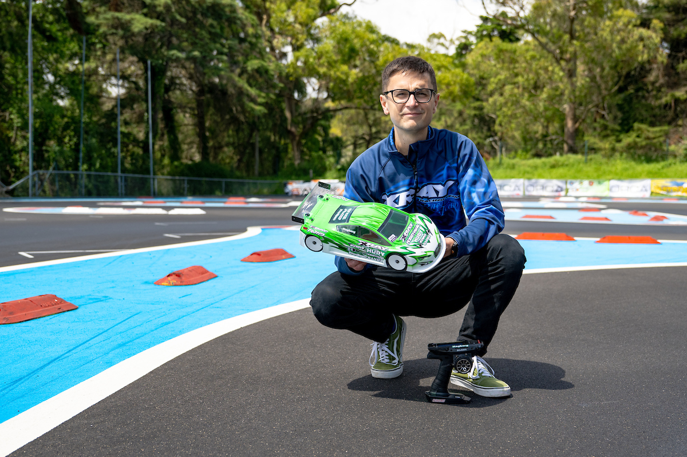

Pilotos de Referência
Campeões da
Pista de Monsanto

🇵🇹
Bruno
Coelho
Coelho
- 5× Campeão Mundial IFMAR
- 7× Campeão Europeu EFRA
Piloto português e o mais titulado do radiomodelismo nacional, Bruno Coelho tem a Pista de Monsanto como casa. Cresceu na pista do CRB e tornou-se o piloto 1/10 elétrico dominante da sua geração — com três títulos mundiais consecutivos (2019, 2022, 2024) e sete títulos europeus a bordo do XRAY. É o maior embaixador do radiomodelismo português no mundo.

🇸🇪
Alexander
Hagberg
Hagberg
- 2× Campeão Mundial IFMAR 1/12
- 9× Campeão Europeu EFRA
O sueco Alexander Hagberg é conhecido mundialmente como "The Master of 1:12 Scale", especialidade em que conquistou dois títulos mundiais (2014 e 2018). Colega de equipa de Bruno Coelho na XRAY durante anos, Hagberg frequenta regularmente a Pista de Monsanto para treinos e competições.